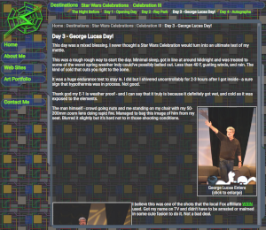

Personal Web Sites
My personal web site has always been a place of learning and exploration for me. It is my personal forum to do whatever I want and explore ideas left untouched or unexplored during my regular work. It's a valuable creative and technical outlet for me.

the Snyder's Web 2024
the Snyder's Web - 2024
The old site was around for a whopping 19 years! Still, most of it aged fairly well considering it was written before AJAX was common and way done without the debugging tools we have today. No firebug or anything of the sort. It even worked in the dreaded time vampire known as IE6. One of the big reasons why it went so long without updates was also because my work kept me very busy doing web work. (The cobbler's kids always need shoes as the saying goes.)2024 came with an unexpected.... gift of time and with it an opportunity to update this site to once again showcase what I can do and more. It was also an opportunity to do some things I've never done before and have fun doing them.
In spite of the fact that most of the interface looks much the same, this site is a completely different animal on the inside! The build was very ambitious - SVG graphics, Custom Web Components, Animations, mobile support, forward and back button support, and ES6 JavaScript would be used. I also wanted to be sure all the old site's flaws were fixed, such as using the back button.
I used Inkscape to re-create all the old raster graphics. The files it generated were perfect for converting into a web browser SVG file. Having editable SVG files was a boon as it allowed me to very quickly and easily adjust colors. SVG can also be infinitely scaled which is also useful. The only downside is the resulting files are a tad larger than their raster predecessors.
Custom Web Components have been interesting. This was my first time creating and using them. The shadow DOM and embedded CSS posed a few challenges. The biggest one was styling and image pathing. In regular CSS, background images are sourced relative to the location of the CSS file itself - in the case of components, the style images are based on where the browser URL path is. I had to add some code to correct that. Components also don't seem to support a print Style Sheets either. Accessibility also is a challenge - the shadow DOM seems to be invisible from tabbing. On the plus side, they made my regular HTML beautiful, and super simple. They saved at least 30 lines of code per topic bar. The ability to create and reuse interface widgets is virtually infinite! They also presented some fun ideas to implement animation by simply changing an attribute - this allowed the SubTopic and Topic bars to pretty much handle themselves. On the SubTopic bars I only need to set a "dismissed" attribute to true and the bar will automatically animate off the screen and fire a callback to delete the element from the DOM. I also debated componentizing the main content panel but opted against it due to the trade-offs involved.
The new animation capability is very nice. It allows for some extremely clean and simple code to create and implement. It took only a few short hours to fully develop the "boot sequence" for this site from scratch. The animations are great as they can provide simple ways to enhance the user experience.
Mobile devices are for better or worse the way most of us read web pages, including myself! Having a good mobile experience here is paramount to success. To implement that, I made my CSS to be resolution - sensitive. The layout changes around to (hopefully) be more accommodating - though I also include redundant links in the content body that does the same thing as the interface components.
For forward and back support, I use the URL hash. With each page change, the hash is updated to your location. This allows not only the browser navigation buttons to function, but also allows bookmarking and refreshing. This solves one of the biggest problems of sites that dynamically pull content in via AJAX.
I love ES6. This latest version of JavaScript has some very powerful tools baked in, and I came to truly enjoy coding it when working for my previous employer. Map, forEach, spread operators, and deconstruction all played a part in making complex operations elegant. My old site was ~2500 lines of code, and this one is ~900 lines less yet does more and better! I was able to knock out this entire site in roughly two and a half weeks.
Browser development tools have been massively helpful. Web development is infinitely easier with CSS adjusting, step through debugging, consoles, and network inspection. Web browser have become an extremely powerful interface renderer with nearly infinite possibilities, and they continue to evolve.
the Snyder's Web - 2005
Shortly after launching the Snyder's Web - 2002 version, I became curious about using the browser's native XML functionality to pull in external content instead of using an IFrame. Since that time, I had researched it off and on, but I never was quite able to get something I was satisfied with. I was happy with the 2002 version but was unsatisfied with a couple of aspects of it - mainly having to maintain 2 different versions for both legacy browsers and regular browsers. So for every page, there were two that must be maintained. The other huge downside to the 2002 version is that it wasn't search engine friendly - as a result my LegacyBrowser version got spidered and would appear on search engine results.{kind=link}
Over the last 2 years, I had learned XHTML and code almost exclusively to that standard. If you're a web developer, this is the best and only way to make the jump, quit HTML 4.01 cold turkey and learn to write a document that passes the W3C's validator. The client XML objects require the document to fully comply with that standard - it cannot pull in HTML 4.01 since it is technically not XML, unlike XHTML. A side benefit is that it forces the overall quality of my coding be high.
Technically, this site was considerably more advanced than the old versions - the interface is similar, the old sites uses JavaScript to provide information about the interface context whereas this version looks at the external document XHTML and changes the interface accordingly. The advantage to this is that the static (non JavaScript) driven version and JavaScript/XML version use the same document. Though this requires care must be taken to ensure that the interface elements are coded consistently in an exact pattern. Another great enhancement is that the old one used a print button to reformat the page for printing - this one takes full advantage of Print StyleSheets - all the user has to do is just print and it'll kick in.
A nice side effect to the way this site is coded, any page could serve as the entry page. The old site had a "front door" that had to be used to invoke the DHTML interface.
One downside to DHTML web sites is that they do break the back button - and this one unfortunately is no exception. Sadly, there is no way for me to alter the browser's history - If I could alter that history for good means, good bet that malicious coders would use it for less than honorable purposes. This site is set up to jump to the last accessed page in the event refresh is clicked. Incidentally that would also allow a user to bookmark a specific page when before the 2002 version used a "bookmark" button. Another downside to this site is that animations may not be as smooth on older machines due to the large number of transparent effects on this site. Nevertheless, it will work.
The look of the site is loosely based on the user interface in Doom 3. I liked the way it handled things; the way it moved and gave me a few neat ideas that this site borrowed. The hardest part of the graphical end of this site was the background. It took a while to get a nice circuit background tile that conveyed the feeling I was after without being too busy. The little spark effects were to enhance the whole future interface look.
the Snyder's Web - 2002
Looking to build on the 2001 version of my web site, I started brainstorming shortly after it launched. The 2001 version of the site worked well enough, but functionality wise it was lacking in a few areas. The biggest was it could only take two levels of content: Topic > Sub-Topic. That and browser bugs started showing up. Mozilla had the biggest/most annoying Bug #138120 that caused elements to be incorrectly unhidden. Internet Explorer 6.0 had a bug that caused the sub menu background not to properly render.{kind=link}
The look of this site is much like the 2001 Snyder's Web site but is a little more polished. The color saturation was decreased on the topic bars and logo. The topic bars also had their look tweaked a little bit, and the sub menus got a nice little bevel effect. The cut-out in the topic bar also exposes more of the sub menu and makes it stand out a little more. Since the sub menu now changes based on what sub topic is selected, I created a little feature that expands and blinks it to show the user that it had changed. Printing and bookmarking buttons were moved under the topic bar this time. As far as the interface, the biggest change was the addition of the sub topic system. This allowed content to be deeply nested. I can have Topic > Sub Topic > Sub Topic... ad nauseum. Implementing this meant that the internal architecture of the site had to be overhauled.
The internal architecture was something I had thought of when I was toying with the idea of the "Power Crumbs" design pictured left. The biggest technical problem was that the 2001 Snyder's Web site was that sub menu data for the topic bars was stored in the main script files. To store what page belongs where would've created a huge amount of JavaScript arrays for data stores. It also would've made the site very difficult to maintain. The only solution was to move most of this data to the content files and have those set the interface context that they are supposed to be accessed. This means the content files state what topic they belong under, what their sub menu is, and what sub topic under the topic bar they belong. The site in turn determines if an interface change is needed and adjusts accordingly.
One enhancement on this site that may be turned on later is a sound system. I had to disable it because Internet Explorer developed severe memory issues. With the sound off, Internet Explorer doesn't grow much in terms of memory consumption, but with it on - it's a totally different story. I have often seen it crash Windows 9x/Me boxes. There are different implementations of sound that might be more memory friendly for Internet Explorer, but unfortunately those were proprietary to that browser. I still believe that sound, if done right, can enrich the user's experience with audio AND visual feedback for their actions. I plan to revisit this later as time permits.
Each time I have developed a new version of my personal site, I have always learned new and different things. As my skills grow, so will my coding. This latest batch of enhancements may be the end of the line for this particular design but I am not holding my breath on that.
the Snyder's Web - 2001
I have had ideas for a DHTML web site since 1998 when the 4.0 browsers were released. My goal was to write a DHTML web site that used a common code base for both major browsers on the market, Internet Explorer 4.0 and Netscape Communicator 4.0. During my original research and development, it became apparent that it would take much more time than I was willing to invest to develop this web site. I eventually abandoned this project, but I learned a lot from the research and development which I was able to apply to my work. I also held on to the ideas, never forgetting my goals.{kind=link}
At the 1998 C|Net Builder.com web conference in New Orleans, Louisiana, Netscape announced Mozilla, known as "Gecko" at the time. This small, fast new page renderer for the Netscape browser promised an end to Netscape Communicator's numerous bugs. They also announced this browser would be 100% W3C DOM compliant. Three years later, I can say the browser has improved vastly and each release gets better, faster, and more stable. I now use it as my primary web browser. The 1.0 release promises to be everything Netscape 4.0 should've been. Hopefully, the Mozilla browser will gain popularity as time goes on.
DOM Scripting is a whole new way of creating and manipulating web pages. The potential is enormous; it gives browser the ability to do virtually anything to web pages. These abilities include changing content on the fly to include new data, filtering records, moving page elements around, and much more. The power of the client's computer is truly unlocked, alleviating the load on both the network and the server.
Work resumed on this site when I felt the Mozilla builds had matured and most of the bugs had been worked out I also had learned a bit more about DOM Scripting techniques the provided new insights.
This site was written without any aid from WYSIWYG type editors like Dreamweaver. All the HTML and JavaScripts were written in HomeSite 4.5.2. The logo for this site was originally created via pen & paper, then on to FreeHand, then back to pen & paper to come up with the web lines, and then finally back into FreeHand when had the look mostly figured out. All conceptual layout and design work for this web site was done in Adobe Photoshop.
the Snyder's Web - 1996
I was fresh out of college when I wrote this. It was a post-graduation project. At the time I made this, I didn't know much JavaScript, so the framed version of this web site used a series of nested frames to change more than one frame panel at a time. It worked, but was difficult to maintain and had a tendency to crash Netscape 2.0. This site featured a non-framed version for legacy browsers.{kind=link}
This web site was a pretty simple one overall. The most time consuming parts were making/rending the spider in 3D Studio R3 and creating the Snyder's Web logo artwork. I actually borrowed a few library books so I could get the general look of the web right. This site also is the first time I attempted any kind of elaborate table/text layout.
Inter-Res - 1996
My second online résumé created at the same time as the 1996 version of the Snyder's Web. This site was to showcase my work I had done during college. It improved on the first Inter-Res in a number of areas, mainly in terms of organization and readability.{kind=link}
This site used a system exactly like the sister site (the Snyder's Web - 1996). Once again it had no JavaScripts.
The graphics for this site were created using FreeHand and Photoshop. The spinning globe logo was created using 3D Studio and the text was later super-imposed on each frame with Photoshop.
Inter-Res - 1995
This was my first serious attempt a full web site. I created an online portfolio, and was the first student in Computer Graphics to do so. It turned out fairly well, and it accomplished my goals at a considerable savings.{kind=link}
This site did have a few minor issues, the biggest was with Netscape 2.0 and the way it handled colored text while printing. Using a colored text somewhat solved the problem, but caused other problems. This was later fixed in the '96 version.
Design work for these graphics was done in FreeHand and later imported into Photoshop where the final touch-up was performed.
{kind=link}